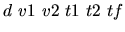

| Trains |
Two towns T1 and T2 are connected through a double railroad. The distance between T1 and T2 is d meters. From T1 to T2 the trains are leaving every t1 seconds. From T2 to T1 the trains are leaving every t2 seconds. The trains from T1 to T2 have a speed of v1 m/s. The trains from T2 to T1 have a speed of v2 m/s.
Your task is to write a program that computes the number of train ``rendezvous" on
the railroad which links T1 and T2, and which occur during the
time interval [0, tf] seconds.
We consider that:
.
10 5 5 1 1 2
6